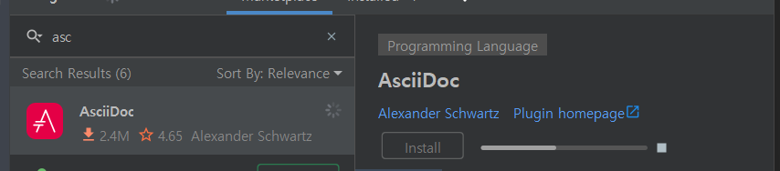
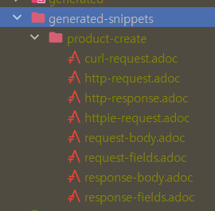
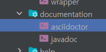

plugins {
id 'java'
id 'org.springframework.boot' version '2.7.7'
id 'io.spring.dependency-management' version '1.0.15.RELEASE'
// asciidoctor에 대한 플러그인 추가
id "org.asciidoctor.jvm.convert" version "3.3.2"
}
group = 'sample'
version = '0.0.1-SNAPSHOT'
sourceCompatibility = '11'
configurations {
compileOnly {
extendsFrom annotationProcessor
}
//asciidoctor 확장 설정을 추가
asciidoctorExt
}
repositories {
mavenCentral()
}
dependencies {
// Spring boot
implementation 'org.springframework.boot:spring-boot-starter-web'
implementation 'org.springframework.boot:spring-boot-starter-data-jpa'
implementation 'org.springframework.boot:spring-boot-starter-validation'
// test
testImplementation 'org.springframework.boot:spring-boot-starter-test'
// lombok
compileOnly 'org.projectlombok:lombok'
annotationProcessor 'org.projectlombok:lombok'
// h2
runtimeOnly 'com.h2database:h2'
// Guava
implementation("com.google.guava:guava:31.1-jre")
// RestDocs
asciidoctorExt 'org.springframework.restdocs:spring-restdocs-asciidoctor'
testImplementation 'org.springframework.restdocs:spring-restdocs-mockmvc'
}
// 'ext' 블록을 통해 전역변수 snippetsDir를 선언하고
// build/generated-snippets 디렉토리로 초기화합니다.
// 윈도우의 mkdir 명령어와 유사한 동작
ext {
snippetsDir = file('build/generated-snippets')
}
// 'test' 태스크의 outputs 디렉토리를 snippetsDir로 설정하여
// 테스트 케이스에서 생성된 스니펫이 해당 디렉토리에 저장되도록 합니다.
test {
//자바로 치면 setOutputDir(snippectsDir)과 유사
outputs.dir snippetsDir
}
// 'asciidoctor' 태스크 설정: 테스트 케이스에서 생성된 스니펫을
// 입력으로 받아 AsciiDoc 문서를 생성합니다.
asciidoctor {
// 'snippetsDir'를 입력 디렉토리로 설정하여 테스트 케이스에서
// 생성된 스니펫을 읽어옵니다.
inputs.dir snippetsDir
// 'asciidoctorExt' 구성을 사용하여 Asciidoctor 플러그인의
// 추가 설정을 가능하게 합니다.
configurations 'asciidoctorExt'
// 'asciidoctor' 태스크는 'test' 태스크에 의존하므로
// 테스트가 선행되도록 합니다.
dependsOn test
// dependsOn 작업 순서를 의미합니다. test > asciidoctor 실행
}
// 'bootJar' 태스크 설정: Asciidoctor를 통해 생성된 HTML 문서를
// Spring Boot JAR 파일에 포함시킵니다.
bootJar {
// 'asciidoctor' 태스크가 선행되도록 합니다.
dependsOn asciidoctor
// 'asciidoctor' 태스크에서 생성된 HTML5 디렉토리를
// 'static/docs'로 복사하여 JAR 파일에 포함시킵니다.
from ("${asciidoctor.outputDir}/html5") {
into 'static/docs'
}
}
// 'test' 태스크에 JUnit 플랫폼을 사용하도록 설정합니다.
tasks.named('test') {
useJUnitPlatform()
}
실행 순서
test > asciidoctor > bootJar dependsOn으로 선행작업을 선택할 수 있습니다.
특히 AsciiDoc이라는 마크업 언어를 사용합니다. 여러 다양한 출력 형식을 지원하며, 특히 HTML, PDF, EPUB, DocBook 등의 형식으로 문서를 생성할 수 있습니다.
플러그인 설치(미리보기 가능)

= Hello, AsciiDoc!
Doc Writer <doc@example.com>
An introduction to http://asciidoc.org[AsciiDoc].
== First Section
* item 1
* item 2
[source,ruby]
puts "Hello, World!"
AsciiDoc라는 마크업 언어로 작성된 문서를 HTML로 변경해주는게 Asciidoctor입니다.
RestDocs 공통 환경 설정
@ExtendWith(RestDocumentationExtension.class)
public abstract class RestDocsSupport {}
Junit 확장으로 RestDocumentationContext를 자동으로 관리하는 데 사용됩니다.
구현 방법 2가지
스프링 컨테이너와 함께 사용하는 경우
@BeforeEach
void setUp(WebApplicationContext context,
RestDocumentationContextProvider provider){
*//**
* documentationConfiguration
* MockMvcRestDocumentation.documentationConfiguration
* Spring REST Docs의 구성 정보 만들기위해 필요합니다.
*
* context 스프링의 컨텍스트
* @SpringBootTest 를 추가하고
* 스프링 부트 테스트로 RestDoc을 작성하는 방법입니다.
* 문서를 작성할 때도 스프링 서버를 띄우게 되는데 그럴 필요가 없다고 생각합니다.
*//*
this.mockMvc = MockMvcBuilders.webAppContextSetup(context)
.apply(documentationConfiguration(provider))
.build();
}
```
@SpringBootTest를 이용하여 전체 애플리케이션 컨텍스트를 로드하고, 실제 스프링 빈들을 주입받아 사용하는 통합 테스트입니다
스프링 컨테이너 없이 단위 테스트처럼 사용하는 경우
@BeforeEach
void setUp(RestDocumentationContextProvider provider){
/**
* 스프링 컨테이너를 띄울 필요가 없는 방식
* 모든 컨트롤러를 매번 명시하기 어렵기 때문에
* 하위 클래스가 구현하여 반환할 수 있도록 추상 메서드를 만듭니다.
*
* ProductControllerDocsTest(MockService)를 컨트롤러로 가지고 있는
* mockMvc가 만들어집니다.
* 추가 초기화로 RestDocs의 설정을 가지고 있습니다.
*/
this.mockMvc = MockMvcBuilders.standaloneSetup(getController())
.apply(documentationConfiguration(provider))
.build();
}
protected abstract Object getController();
특정 컨트롤러의 동작을 테스트하고 할때, 스프링 컨테이너를 동작시키 않고 단위 테스트 스타일로 사용하고 있습니다,
standaloneSetup 의 동작 방식
Initializing Spring TestDispatcherServlet '' 초기화
WebMvc와 관련된 오브젝트를 생성
실제 톰캣을 띄우지 않고 MockHttpServletRequest 객체를 생성
테스트 코드에 작성된 URL에 매핑된 컨트롤러를 찾는다.
RestDocs를 사용할 때 , Controller를 테스트할 때는 테스트 환경이 유사합니다. 둘다 목적이 확실하고 계층이 얇게 됩니다.
하위 서비스 계층은 컨트롤러 계층이 검증된 데이터를 받아서 비즈니스 검증과 비즈니스 로직을 수행한 결과를 데이터 접속 계층에게 명령할 뿐입니다.
그러므로 컨트롤러 계층은 웹 요청으로 넘어온 데이터를 검증만 하면 됩니다. @SpringBootTest로 테스트 환경을 묶어서 사용할 수 있지만 , 그럴 필요가 없습니다. 그리고 RestDocs와 Controller의 테스트는 목적이 다르기 때문에 분리해야 합니다.
RestDocs는 넘어오는 데이터의 대한 API와 응답되는 객체의 API에 대한 스펙을 정의해주는 역할이기 때문에 관리 포인트가 추가로 발생할 수 있지만 분리해주는게 유지보수에 더 유리합니다.
작성하기
public class ProductControllerDocsTest extends RestDocsSupport {
// 컨트롤러를 반환하기위해서 Service를 모킹해서 넣습니다.
private final ProductService productService = Mockito.mock(ProductService.class);
@Override
protected Object getController() {
return new ProductController(productService);
}
@DisplayName("상품 등록 요청/응답 RestApi 작성")
@Test
void createProduct() throws Exception {
//given given when then 은 크게 의미가 없다.
ProductCreateRequest request = createOrder();
ProductResponse productResponse = createProductResponse();
//stubbing 을 추가여 동작하도록 합니다. // 서비서 Stubbing
given(productService.createProduct(any(ProductCreateServiceRequest.class)))
.willReturn(productResponse);
this.mockMvc.perform(
MockMvcRequestBuilders.post("/api/v1/products/new2")
.contentType(MediaType.APPLICATION_JSON)
.content(objectMapper.writeValueAsString(request))
)
.andDo(MockMvcResultHandlers.print())
.andExpect(MockMvcResultMatchers.status().isOk())
// 위 동작까지는 컨트롤러 테스트와 동일고 아래 부터는 문서를 만들기위한 체이닝 메소드입니다
// .MockMvcRestDocumentation.document의 유틸의 도움을 받아서 작성합니다.
.andDo(
document(
"product-create" // 테스트에 대한 ID 값
,preprocessRequest(prettyPrint())
,preprocessResponse(prettyPrint())
,requestFields(
fieldWithPath("type").type(STRING).description("상품 타입"),
fieldWithPath("sellingStatus").type(STRING).optional().description("판매 상태"),
fieldWithPath("name").type(STRING).description("상품명"),
fieldWithPath("price").type(NUMBER).description("사품 가격")
)
//응답은 ApiResponse에 대해서 어떤 응답이 내려오는지 작성하면됩니다.
,responseFields(
fieldWithPath("code").type(NUMBER).description("코드"),
fieldWithPath("status").type(STRING).description("상태"),
fieldWithPath("message").type(STRING).description("메세지"),
fieldWithPath("data").type(OBJECT).description("데이터"),
fieldWithPath("data.id").type(NUMBER).description("상품 ID"),
fieldWithPath("data.type").type(STRING).description("상품 타입"),
fieldWithPath("data.productNumber").type(STRING).description("상품 번호"),
fieldWithPath("data.sellingStatus").type(STRING).description("판매 상태"),
fieldWithPath("data.name").type(STRING).description("상품명"),
fieldWithPath("data.price").type(NUMBER).description("상품 가격")
)
)
);
}
private ProductResponse createProductResponse() {
return ProductResponse.builder()
.id(1L)
.productNumber("001")
.name("아메리카노")
.price(4000)
.type(ProductType.HANDMADE)
.sellingStatus(ProductSellingStatus.SELLING)
.build();
}
private ProductCreateRequest createOrder() {
return ProductCreateRequest.builder()
.name("아메리카노")
.price(4000)
.sellingStatus(ProductSellingStatus.SELLING)
.type(ProductType.HANDMADE)
.build();
}
}
snippet이란 ?
PathParameter,
get-QueryParameter,
Post-요청 RequsetField
응답 Response-Field등이 있습니다.
상황에 맞게 넣으면 됩니다. 현재는 post로 requestField 와 ReponseField를 넣습니다. requestFields는 PayLoadDocumentation이라는 유틸을 사용합니다. 하나의 필드를 이제 FieldWithPath 라는걸로 넣습니다.
현재 컨트롤러 dto를 보면 들어오는 필드를 requestField에 명시합니다. type은 dto 필드의 타입을 말하며 , jsonFieldType이라는걸로 타입을 지정합니다. 이넘은 스트링으로 구분 테스트를 작성합니다.
Sannic

MockMvc에 RestDocs 설정을 제공하고 그 MockMvc로 테스트를 작성하면서 어떤 요청과 응답에 대한 필드바이 필드로 명시를 합니다 테스트 결과를 수행하고 결과물로 어떤 코드 조각들, 문서 조각들이 생성되고 해당 경로에 저장되었습니다.
추가 Gradle 설정
asciidoctor {
inputs.dir snippetsDir
configurations 'asciidoctorExt'
sources { // 특정 파일만 html로 만든다.
include("**/index.adoc")
}
baseDirFollowsSourceFile() // 다른 adoc 파일을 include할 때 경로를 baseDir로 맞춘다.
dependsOn test
}
문서화하기
작성된 문서 내용을 나누는 방법
문서는 큼지막한 도메인 별로 구분을 하는 방법
화면이 중요한 서비스라면 화면 단위로 끊어서 구분하는 방법
등 회사 비즈니스 로직에 맞게 문서화를 합니다.

Gradle를 실행하여 test가 동작하게 되면서 지정한 위치에 index.html이 만들어집니다.
bootJar {
dependsOn asciidoctor
from ("${asciidoctor.outputDir}") {
into 'static/docs'
}
}
그후 Build를 실행합니다.
해당 Gradle 내용을 보면 Jar파일을 만들 때 설정에서 지정한 위치에 있는 파일을 static/docs로 복사합니다.